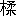
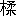
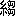
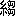

倭人在帶方東南大海之中、依山島爲國邑。舊百餘國。漢時有朝見者、今使譯所通三十國。從郡至倭、循海岸水行、歴韓國、乍南乍東、到其北岸狗邪韓國七千餘里。始度一海千餘里、至對馬國、其大官曰卑狗、副曰卑奴母離、所居絶島、方可四百餘里、土地山險、多深林、道路如禽鹿徑、有千餘戸、無良田、食海物自活、乘船南北市糴。又南渡一海千餘里、名曰瀚海、至一大國、官亦曰卑狗、副曰卑奴母離、方可三百里、多竹木叢林、有三千許家、差有田地、耕田猶不足食、亦南北市糴。又渡一海千餘里、至末盧國、有四千餘戸、濱山海居、草木茂盛、行不見前人、好捕魚鰒、水無深淺、皆沈沒取之。東南陸行五百里、到伊都國、官曰爾支、副曰泄謨觚・柄渠觚、有千餘戸、世有王、皆統屬女王國、郡使往來常所駐。東南至奴國百里、官曰
 馬觚、副曰卑奴母離、有二萬餘戸。東行至不彌國百里、官曰多模、副曰卑奴母離、有千餘家。南至投馬國水行二十日、官曰彌彌、副曰彌彌那利、可五萬餘戸。南至邪馬壹國、女王之所都、水行十日・陸行一月、官有伊支馬、次曰彌馬升、次曰彌馬獲支、次曰奴佳
馬觚、副曰卑奴母離、有二萬餘戸。東行至不彌國百里、官曰多模、副曰卑奴母離、有千餘家。南至投馬國水行二十日、官曰彌彌、副曰彌彌那利、可五萬餘戸。南至邪馬壹國、女王之所都、水行十日・陸行一月、官有伊支馬、次曰彌馬升、次曰彌馬獲支、次曰奴佳 、可七萬餘戸。自女王國以北、其戸數道里可略載、其餘旁國遠絶不可得詳。次有斯馬國、次有己百支國、次有伊邪國、次有郡支國、次有彌奴國、次有好古都國、次有不呼國、次有姐奴國、次有對蘇國、次有蘇奴國、次有呼邑國、次有華奴蘇奴國、次有鬼國、次有爲吾國、次有鬼奴國、次有邪馬國、次有躬臣國、次有巴利國、次有支惟國、次有烏奴國、次有奴國、此女王境界所盡。其南有狗奴國、男子爲王、其官有狗古智卑狗、不屬女王。自郡至女王國萬二千餘里、男子無大小、皆黥面文身、自古以來、其使詣中國、皆自稱大夫、夏后少康之子、封於會稽、斷髮文身、以避蛟龍之害、今倭水人、好沈沒捕魚蛤、文身亦以厭大魚水禽、後稍以爲飾、諸國文身各異、或左或右、或大或小、尊卑有差。計其道里、當在會稽東冶之東。其風俗不淫、男子皆露、以木緜招頭、其衣横幅、但結束相連、略無縫、婦人被髮屈、作衣如單被、穿其中央、貫頭衣之。種禾稻紵麻、蠶桑緝績、出細紵
、可七萬餘戸。自女王國以北、其戸數道里可略載、其餘旁國遠絶不可得詳。次有斯馬國、次有己百支國、次有伊邪國、次有郡支國、次有彌奴國、次有好古都國、次有不呼國、次有姐奴國、次有對蘇國、次有蘇奴國、次有呼邑國、次有華奴蘇奴國、次有鬼國、次有爲吾國、次有鬼奴國、次有邪馬國、次有躬臣國、次有巴利國、次有支惟國、次有烏奴國、次有奴國、此女王境界所盡。其南有狗奴國、男子爲王、其官有狗古智卑狗、不屬女王。自郡至女王國萬二千餘里、男子無大小、皆黥面文身、自古以來、其使詣中國、皆自稱大夫、夏后少康之子、封於會稽、斷髮文身、以避蛟龍之害、今倭水人、好沈沒捕魚蛤、文身亦以厭大魚水禽、後稍以爲飾、諸國文身各異、或左或右、或大或小、尊卑有差。計其道里、當在會稽東冶之東。其風俗不淫、男子皆露、以木緜招頭、其衣横幅、但結束相連、略無縫、婦人被髮屈、作衣如單被、穿其中央、貫頭衣之。種禾稻紵麻、蠶桑緝績、出細紵 緜、其地無牛馬虎豹羊鵲、兵用矛楯木弓、木弓短下長上、竹箭或鐵鏃、或骨鏃、所有無與
緜、其地無牛馬虎豹羊鵲、兵用矛楯木弓、木弓短下長上、竹箭或鐵鏃、或骨鏃、所有無與 耳・朱崖同。倭地温暖、冬夏食生菜、皆徒跣、有屋室、父母兄弟臥息異處、以朱丹塗其身體、如中國用粉也、食飮用
耳・朱崖同。倭地温暖、冬夏食生菜、皆徒跣、有屋室、父母兄弟臥息異處、以朱丹塗其身體、如中國用粉也、食飮用 豆手食。其死有棺無槨、封土作冢、始死停喪十餘日、當時不食肉、喪主哭泣、他人就歌舞飮酒、已葬、擧家詣水中澡浴、以如練沐。其行來渡海詣中國、恆使一人不梳頭、不去蝨、衣服垢汚、不食肉、不近婦人、如喪人、名之爲持衰、若行者吉善、共顧其生口財物、若有疾病、遭暴害、便欲殺之、謂其持衰不謹。出眞珠・青玉、其山有丹、其木有※［＃「木＋（冂＜はみ出た横棒二本）」、81-4］・杼・豫樟・・櫪・投・橿・烏號・楓香、其竹篠・
豆手食。其死有棺無槨、封土作冢、始死停喪十餘日、當時不食肉、喪主哭泣、他人就歌舞飮酒、已葬、擧家詣水中澡浴、以如練沐。其行來渡海詣中國、恆使一人不梳頭、不去蝨、衣服垢汚、不食肉、不近婦人、如喪人、名之爲持衰、若行者吉善、共顧其生口財物、若有疾病、遭暴害、便欲殺之、謂其持衰不謹。出眞珠・青玉、其山有丹、其木有※［＃「木＋（冂＜はみ出た横棒二本）」、81-4］・杼・豫樟・・櫪・投・橿・烏號・楓香、其竹篠・ ・桃支、有薑・橘・椒・
・桃支、有薑・橘・椒・ 荷、不知以爲滋味、有
荷、不知以爲滋味、有 猿・黒雉。其俗擧事行來、有所云爲、輒灼骨而卜、以占吉凶、先告所卜、其辭如令龜法、視火
猿・黒雉。其俗擧事行來、有所云爲、輒灼骨而卜、以占吉凶、先告所卜、其辭如令龜法、視火 占兆。其會同坐起、父子男女無別、人性嗜酒、見大人所敬、但搏手以當跪拜、其人壽考、或百年、或八九十年。其俗國大人皆四五婦、下戸或二三婦、婦人不淫、不
占兆。其會同坐起、父子男女無別、人性嗜酒、見大人所敬、但搏手以當跪拜、其人壽考、或百年、或八九十年。其俗國大人皆四五婦、下戸或二三婦、婦人不淫、不 忌、不盜竊、少諍訟、其犯法、輕者沒其妻子、重者滅其門戸及宗族、尊卑各有差序、足相臣服、收租賦、有邸閣、國國有市、交易有無、使大倭監之。自女王國以北、特置一大率、檢察諸國、諸國畏憚之、常治伊都國、於國中有如刺史、王遣使詣京都・帶方郡・諸韓國、及郡使倭國、皆臨津搜露、傳送文書・賜遺之物詣女王、不得差錯。下戸與大人相逢道路、逡巡入草、傳辭説事、或蹲或跪、兩手據地、爲之恭敬、對應聲曰噫、比如然諾。其國本亦以男子爲王、住七八十年、倭國亂、相攻伐歴年、乃共立一女子爲王、名曰卑彌呼、事鬼道、能惑衆、年已長大、無夫壻、有男弟、佐治國、自爲王以來、少有見者、以婢千人自侍、唯有男子一人、給飮食、傳辭出入居處。宮室・樓觀・城柵嚴設、常有人持兵守衞。女王國東渡海千餘里、復有國、皆倭種。又有侏儒國、在其南、人長三四尺、去女王四千餘里。又有裸國・黒齒國、復在其東南、船行一年可至。參問倭地、絶在海中洲島之上、或絶或連、周旋可五千餘里。景初二年六月、倭女王遣大夫難升米等詣郡、求詣天子朝獻、太守劉夏遣吏、將送詣京都。其年十二月、詔書報倭女王曰、制詔親魏倭王卑彌呼、帶方太守劉夏、遣使送汝大夫難升米・次使都市牛利、奉汝所獻男生口四人・女生口六人・斑布二匹二丈以到、汝所在踰遠、乃遣使貢獻、是汝之忠孝、我甚哀汝、今以汝爲親魏倭王、假金印紫綬、裝封付帶方太守假授、汝其綏撫種人、勉爲孝順。汝來使難升米・牛利渉遠、道路勤勞、今以難升米爲率善中郎將、牛利爲率善校尉、假銀印青綬、引見勞賜遣還。今以絳地交龍錦五匹・絳地粟
忌、不盜竊、少諍訟、其犯法、輕者沒其妻子、重者滅其門戸及宗族、尊卑各有差序、足相臣服、收租賦、有邸閣、國國有市、交易有無、使大倭監之。自女王國以北、特置一大率、檢察諸國、諸國畏憚之、常治伊都國、於國中有如刺史、王遣使詣京都・帶方郡・諸韓國、及郡使倭國、皆臨津搜露、傳送文書・賜遺之物詣女王、不得差錯。下戸與大人相逢道路、逡巡入草、傳辭説事、或蹲或跪、兩手據地、爲之恭敬、對應聲曰噫、比如然諾。其國本亦以男子爲王、住七八十年、倭國亂、相攻伐歴年、乃共立一女子爲王、名曰卑彌呼、事鬼道、能惑衆、年已長大、無夫壻、有男弟、佐治國、自爲王以來、少有見者、以婢千人自侍、唯有男子一人、給飮食、傳辭出入居處。宮室・樓觀・城柵嚴設、常有人持兵守衞。女王國東渡海千餘里、復有國、皆倭種。又有侏儒國、在其南、人長三四尺、去女王四千餘里。又有裸國・黒齒國、復在其東南、船行一年可至。參問倭地、絶在海中洲島之上、或絶或連、周旋可五千餘里。景初二年六月、倭女王遣大夫難升米等詣郡、求詣天子朝獻、太守劉夏遣吏、將送詣京都。其年十二月、詔書報倭女王曰、制詔親魏倭王卑彌呼、帶方太守劉夏、遣使送汝大夫難升米・次使都市牛利、奉汝所獻男生口四人・女生口六人・斑布二匹二丈以到、汝所在踰遠、乃遣使貢獻、是汝之忠孝、我甚哀汝、今以汝爲親魏倭王、假金印紫綬、裝封付帶方太守假授、汝其綏撫種人、勉爲孝順。汝來使難升米・牛利渉遠、道路勤勞、今以難升米爲率善中郎將、牛利爲率善校尉、假銀印青綬、引見勞賜遣還。今以絳地交龍錦五匹・絳地粟 十張・※［＃「くさかんむり／倩」、82-10］絳五十匹・紺青五十匹、答汝所獻貢直。又特賜汝紺地句文錦三匹・細班華五張・白絹五十匹・金八兩・五尺刀二口・銅鏡百枚・眞珠・鉛丹各五十斤、皆裝封付難升米・牛利、還到録受、悉可以示汝國中人、使知國家哀汝、故鄭重賜汝好物也。正始元年、太守弓遵遣建中校尉梯儁等、奉詔書印綬、詣倭國、拜假倭王、并齎詔、賜金帛・錦・刀・鏡・采物。倭王因使上表、答謝詔恩。其四年、倭王復遣使大夫伊聲耆・掖邪狗等八人、上獻生口・倭錦・絳青・緜衣・帛布・丹・木※［＃「けものへん＋付」、83-1］・短弓矢。掖邪狗等壹拜率善中郎將印綬。其六年、詔賜倭難升米黄幢、付郡假授。其八年、太守王
十張・※［＃「くさかんむり／倩」、82-10］絳五十匹・紺青五十匹、答汝所獻貢直。又特賜汝紺地句文錦三匹・細班華五張・白絹五十匹・金八兩・五尺刀二口・銅鏡百枚・眞珠・鉛丹各五十斤、皆裝封付難升米・牛利、還到録受、悉可以示汝國中人、使知國家哀汝、故鄭重賜汝好物也。正始元年、太守弓遵遣建中校尉梯儁等、奉詔書印綬、詣倭國、拜假倭王、并齎詔、賜金帛・錦・刀・鏡・采物。倭王因使上表、答謝詔恩。其四年、倭王復遣使大夫伊聲耆・掖邪狗等八人、上獻生口・倭錦・絳青・緜衣・帛布・丹・木※［＃「けものへん＋付」、83-1］・短弓矢。掖邪狗等壹拜率善中郎將印綬。其六年、詔賜倭難升米黄幢、付郡假授。其八年、太守王 到官。倭女王卑彌呼與狗奴國男王卑彌弓呼素不和、遣倭載斯烏越等詣郡、説相攻撃状。遣塞曹掾史張政等、因齎詔書・黄幢、拜假難升米、爲檄告喩之。卑彌呼以死、大作冢、徑百餘歩、徇葬者奴婢百餘人。更立男王、國中不服、更相誅殺、當時殺千餘人。復立卑彌呼宗女壹與年十三爲王、國中遂定。政等以檄告喩壹與、壹與遣倭大夫率善中郎將掖邪狗等二十人、送政等還、因詣臺、獻上男女生口三十人、貢白珠五千孔・青大勾珠二枚・異文雜錦二十匹。
到官。倭女王卑彌呼與狗奴國男王卑彌弓呼素不和、遣倭載斯烏越等詣郡、説相攻撃状。遣塞曹掾史張政等、因齎詔書・黄幢、拜假難升米、爲檄告喩之。卑彌呼以死、大作冢、徑百餘歩、徇葬者奴婢百餘人。更立男王、國中不服、更相誅殺、當時殺千餘人。復立卑彌呼宗女壹與年十三爲王、國中遂定。政等以檄告喩壹與、壹與遣倭大夫率善中郎將掖邪狗等二十人、送政等還、因詣臺、獻上男女生口三十人、貢白珠五千孔・青大勾珠二枚・異文雜錦二十匹。